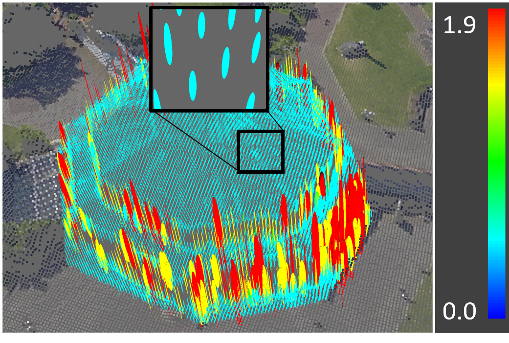
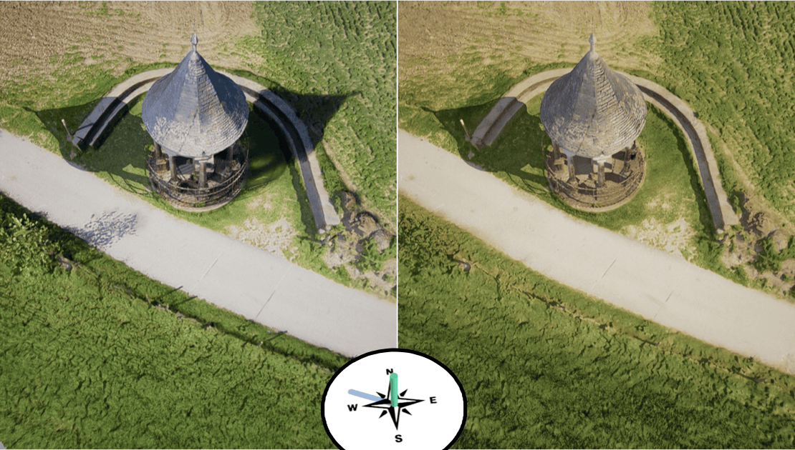
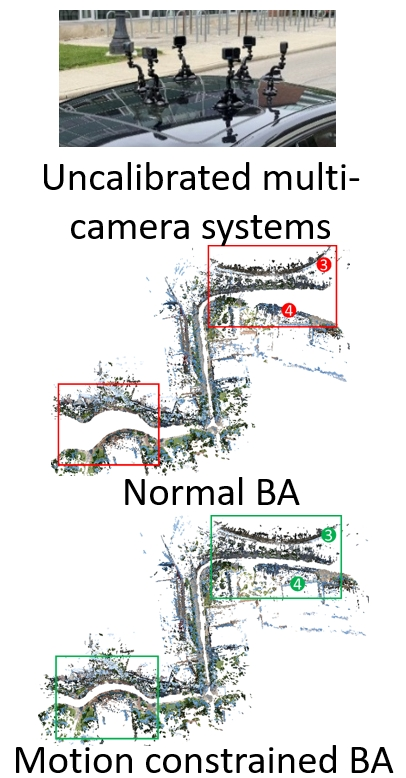
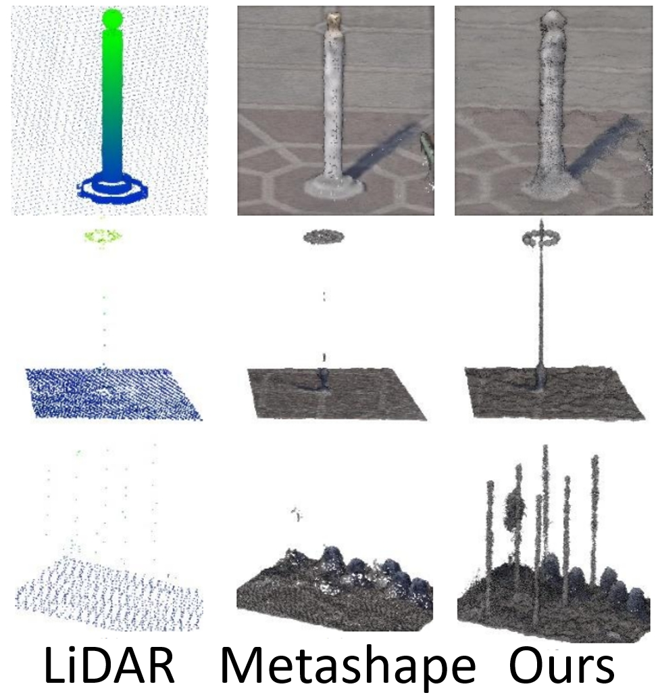
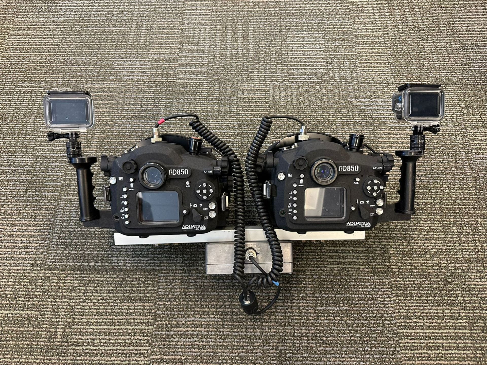
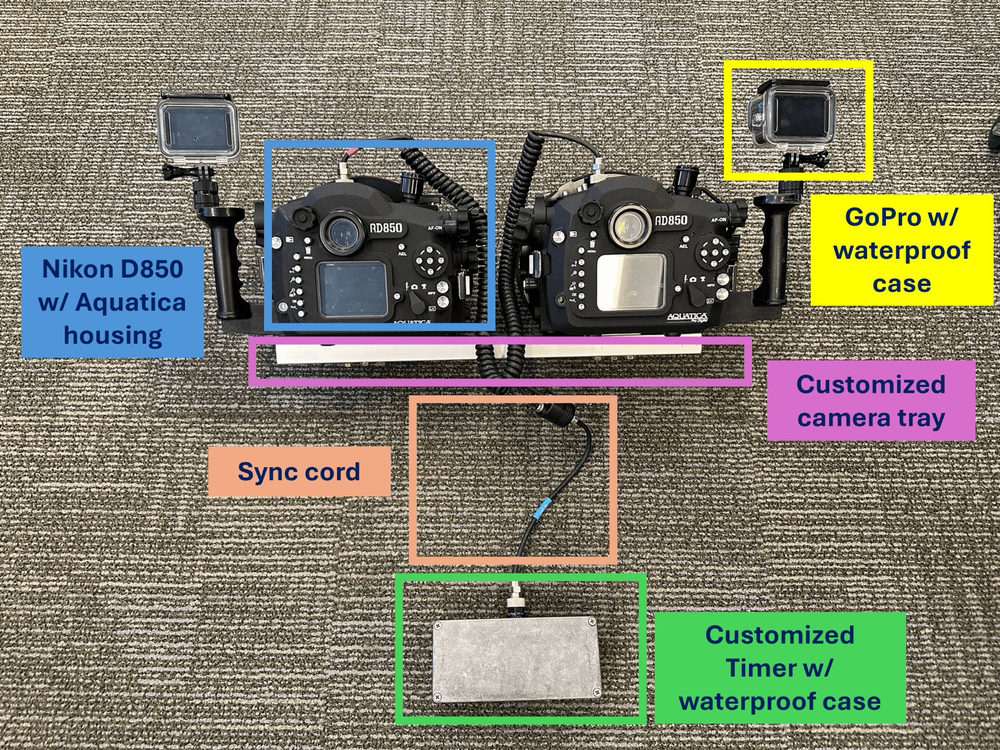
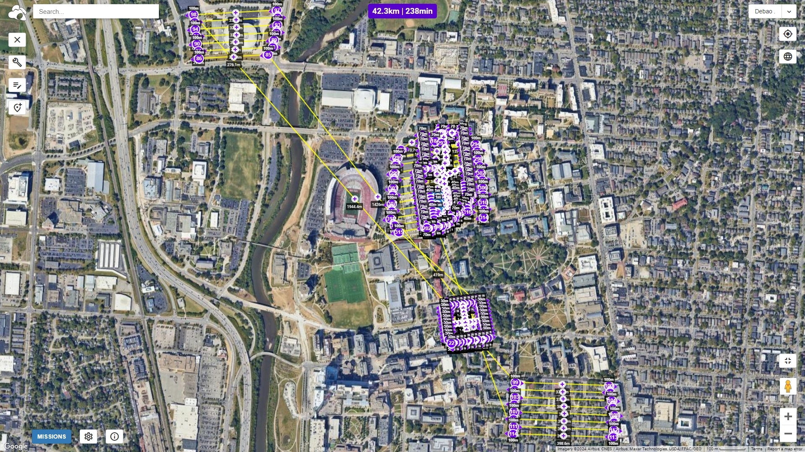

Debao Huang
I'm a PhD candidate in the Geospatial Data Analytics Group at The Ohio State University.
I started in January 2021, supervised by Prof. Rongjun Qin. My research focuses on large-scale 3D reconstruction (SfM, NeRF, 3DGS, 4DGS) and uncertainty quantification. Additionally, I leverage vision foundation models and multimodal learning to advance large-scale 3D scene understanding. I am working on projects funded by ONR, IARPA, AFRL, and NSF to solve complex 3D geometry problems.
Keywords: 3D Computer Vision, Photogrammetry, Machine Learning, Generative AI, Vision Foundation Models.
News
-
05/2026Our paper, Uncertainty Quantification Framework for Aerial and UAV Photogrammetry through Error Propagation, has been accepted to the ISPRS Journal of Photogrammetry and Remote Sensing! We propose a self-calibrating framework that propagates errors through both the SfM and MVS stages to quantify per-point uncertainty in aerial and UAV photogrammetric point clouds. Check out the paper and code for more details.
-
02/2026Our paper, Olbedo: An Albedo and Shading Aerial Dataset for Large-Scale Outdoor Environments, has been accepted to CVPR 2026! We are releasing the first large-scale, real-world aerial dataset designed specifically for outdoor albedo-shading decomposition in the wild. Check out the project page and paper for more details.
-
01/2026I will be attending Geo Week 2026 in Denver, where I look forward to connecting with the community and industry professionals. I am also exploring full-time opportunities as I transition into the next stage of my career.
-
12/2025I am honored to announce that I have been awarded the Lyman J. Ladner Memorial Scholarship from ASPRS!
-
12/2025I am open to internship or full-time opportunities in 2026 in the fields of photogrammetry, computer vision, and machine learning.
-
03/2025Our new papers on dynamic 3D Gaussian Splatting and uncertainty quantification were accepted to ISPRS Geospatial Week 2025.
-
11/2024I was honored to be an outstanding reviewer for the 35th British Machine Vision Conference (BMVC 2024).
-
04/2024Paper on incorporating motion constraints in Bundle Adjustment published in ISPRS Journal of Photogrammetry and Remote Sensing.
-
04/2024Paper on scaling up NeRF for large-scale aerial images published in The Photogrammetric Record.
-
06/2023Paper on uncertainty quantification in MVS accepted to ISPRS Geospatial Week 2023.
-
05/2022Paper on baseline constraint in BA for SfM accepted to ISPRS Congress 2022.
-
04/2022Paper on PlanetScope images for 3D reconstruction published in GIScience & Remote Sensing Journal.
-
08/2021Paper on 3D change detection of building deconstruction published in International Journal of Digital Earth.
Selected Research

This paper presents a novel, self-calibrating method to estimate the uncertainty in the MVS stage, and an uncertainty quantification framework for Aerial and UAV Photogrammetry.

We introduce Olbedo, a large-scale aerial dataset containing 5,664 UAV images for outdoor albedo-shading decomposition in the wild.
This work presents a method for reconstructing dynamic urban scenes from UAV full-motion videos using 3D Gaussian Splatting, effectively handling moving objects in large-scale environments.

This paper derives novel geometric constraints in BA of SfM pipeline that assumes minimal knowns about the uncalibrated multi-camera systems at the ground level. Our proposed constraints are effective in correcting topographical errors (i.e., trajectory drifts) of the reconstruction.

This paper provides multi-camera tiling (MCT) strategy to scale the NeRF on large-scale aerial datasets and a thorough geometry assessment of NeRF.
Software and Demo
Full 3D reconstruction pipeline from SfM, MVS, meshing to texturing.
Estimating and encoding error covariance of 3D points, visualization in desktop GUI and VR.
Dynamic 3D Gaussian Splatting from UAV full motion videos. Left: original video. Right: rendered video from a novel view.
Relighting 3D models under novel lighting conditions (direction specified by the compass). RGB textures (left) retain shading, causing shadow duplication artifacts, while albedo textures (right) eliminate them for plausible results.
Hardware


Honors
- Lyman J. Ladner Memorial Scholarship, American Society for Photogrammetry and Remote Sensing, 2026 — awarded to outstanding students (Top 1%) pursuing research and careers in photogrammetry.
Services
Academic Services
I serve as a peer reviewer for:
- International Journal of Computer Vision
- ISPRS Journal of Photogrammetry and Remote Sensing
- IEEE Transactions on Geoscience and Remote Sensing
- International Journal of Applied Earth Observation and Geoinformation
- Photogrammetric Engineering & Remote Sensing
- Remote Sensing
- Applied Sciences
- IEEE Transactions on Circuits and Systems for Video Technology
- International Journal of Digital Earth
- British Machine Vision Conference (BMVC 2024) -- Outstanding Reviewer
- Conference on Neural Information Processing Systems (NeurIPS 2024)
Professional Services
I am a Federal Aviation Administration (FAA) certificated remote pilot, allowing me to collect UAV data for research and commercial purposes in the US. Survey missions totaling 73.4 hectares and 47.8 km of flight path since 2021.
